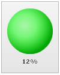

Bulb Gauge > Creating a simple chart |
In our first bulb gauge, we would be plotting Attrition Rate from 0-100%. The final outcome would be: |
|  |
The various tasks involved in building this chart are:
With the tasks defined, now lets get to the XML side of things. |
| XML for the chart |
| <chart upperLimit='100' lowerLimit='0' numberSuffix='%'> <colorRange> <color minValue='0' maxValue='15' label='Low' code='00FF00' /> <color minValue='15' maxValue='35' label='Medium' code='FFFF00' /> <color minValue='35' maxValue='100' label='High' code='FF0000' /> </colorRange> <value>12</value> </chart> |
| Explanation |
First of all comes the <chart> element which is the starting element for any chart that you create using FusionWidgets. Now we define the lower and upper limits of the gauge scale. To define the limits, we use the lowerLimit and upperLimit attributes of the <chart> element. We also set the palette number and number suffix (the character which would show up at the end of end number). |
| <chart upperLimit='100' lowerLimit='0' numberSuffix='%'> |
There are other attributes of the <chart> element which we would not be delving into now, because of this being a really basic chart. Next, we need to define our color range. As we had earlier seen, this chart has 3 color ranges. To define the color range, we use the <colorRange> element, which is an immediate child of the <chart> element. Under each <colorRange> element, we place a <color> element specifying a single color range as shown in the code below. |
| <colorRange> <color minValue='0' maxValue='15' label='Low' code='00FF00' /> <color minValue='15' maxValue='35' label='Medium' code='FFFF00' /> <color minValue='35' maxValue='100' label='High' code='FF0000' /> </colorRange> |
| After that, we set the value of the chart using: |
| <value>12</value> |
| And this finishes our first bulb gauge. |